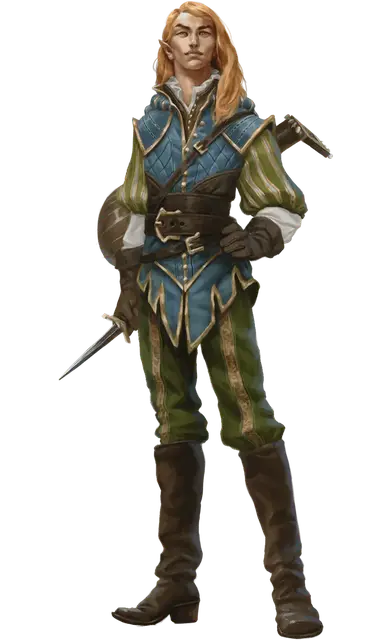

Давил Старсонг
Davil Starsong
Средний Гуманоид (Эльф), нейтральный, именной НИП

Класс Доспеха 15 (кольчужная рубаха)
Хиты 82 (15к8 + 15)
Скорость 30 футов
| мод | спас | ||
|---|---|---|---|
| СИЛ | 10 | +0 | +0 |
| ЛОВ | 14 | +2 | +5 |
| ТЕЛ | 12 | +1 | +1 |
| мод | спас | ||
|---|---|---|---|
| ИНТ | 16 | +3 | +3 |
| МДР | 12 | +1 | +1 |
| ХАР | 17 | +3 | +6 |
Навыки Выступление +6, История +6, Магия +6, Проницательность +4
Чувства тёмное зрение 60 футов, пассивное Восприятие 14
Языки Общий, Дварфийский, Драконий, Эльфийский
Опасность 6 (2300 опыта)
Бонус мастерства +3
Особенности
Наследие фей. Давил совершает с преимуществом спасброски от очарования, и его невозможно магически усыпить.
Использование заклинаний. Давил является заклинателем 12-го уровня. Его базовой характеристикой является Харизма (Сл спасброска от заклинания 14, +6 к попаданию атаками заклинаниями). У него подготовлены следующие заклинания волшебника:
• Заговоры (неограниченно): волшебная рука [mage hand], починка [mending], малая иллюзия [minor illusion], злая насмешка [vicious mockery]
• 1 уровень (4 ячейки): лечение ран [cure wounds], маскировка [disguise self], усыпление [sleep]
• 2 уровень (3 ячейки): корона безумия [crown of madness], невидимость [invisibility], внушение [suggestion]
• 3 уровень (3 ячейки): необнаружимость [nondetection], послание [sending], языки [tongues]
• 4 уровень (3 ячейки): принуждение [compulsion], свобода перемещения [freedom of movement], превращение [polymorph]
• 5 уровень (2 ячейка): подчинение личности [dominate person], высшее восстановление [greater restoration]
• 6 уровень (1 ячейка): неудержимая пляска Отто [Otto’s irreible dance]
Действия
Кинжал. Рукопашная или дальнобойная атака оружием: +5 к попаданию, досягаемость 5 футов или дистанция 20/60 футов, одна цель. Попадание: Колющий урон 4 (1к4 + 2).
Описание
В филиале Чёрной Сети в Глубоководье Давил носит титул мастера сделок и переговоров, поскольку у него чутьё на выгодные сделки и он легко заводит друзей.
Давил может свести персонажей с прочими вожаками отделения Чёрной Сети в Глубоководье, например с Истрид Хорн (если им нужен займ), Скимо Вирдботлом (если им нужна магия), Ташлин Яфирой (если им нужно оружие или наёмники) и Зиражем-охотником (если им нужен опытный наёмный убийца).
Как и многие солнечные эльфы. Давил от природы склонен к магии, а эльфийское долголетие научило его терпению. В отличие от большинства сородичей, он со вершенно не претенциозен и не высокомерен. У него есть комната в «Зияющем портале», а свои дела он ведёт в баре этого заведения. Сделки он обсуждает любезно и высоко парно, даже когда напьётся. Как фокусирующий предмет для заклинаний он использует эльфийскую лютню.
Разбойниками Рока прозвали себя пятеро беспринципных искателей приключений, обожавших грабить логова личей (которые многие называют «роковыми»).
Три года назад они прекратили поиски приключений, вступили в Чёрную Сеть и приехали в Глубоководье, планируя устроить тут ячейку Жентарим. За это время они заключили союзы с разными аристократами и гильдиями, а с другими поссорились, в то же время пытаясь отбиться от лазутчиков Арфистов.